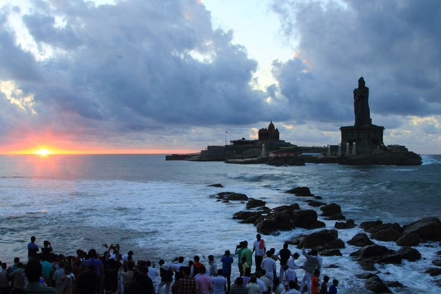
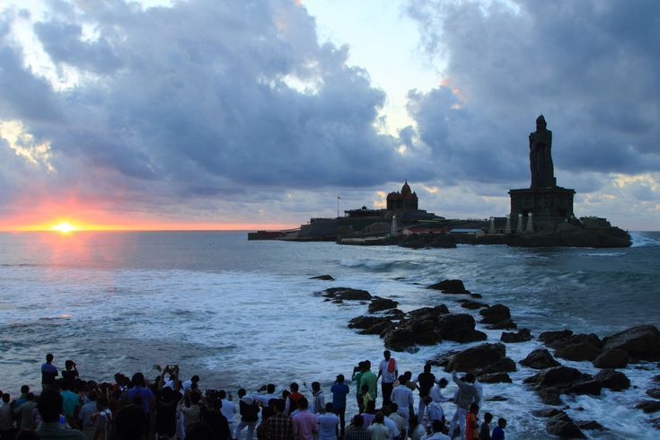

 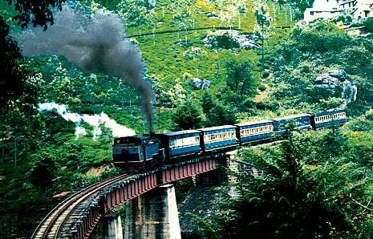
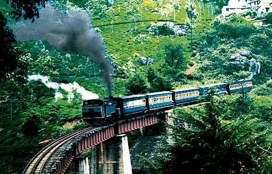
 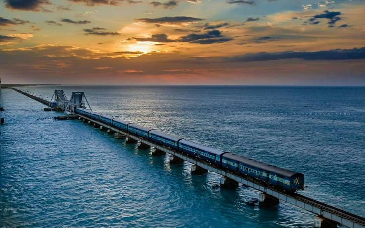
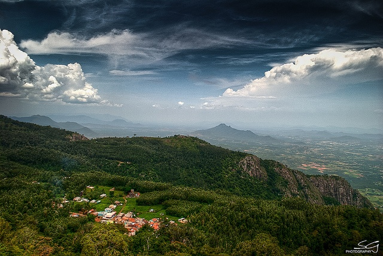
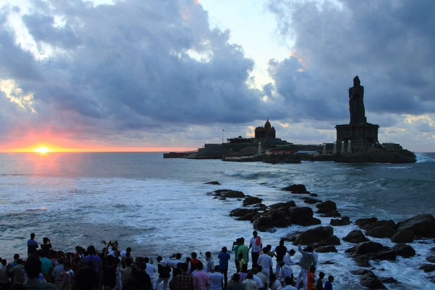
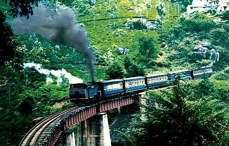
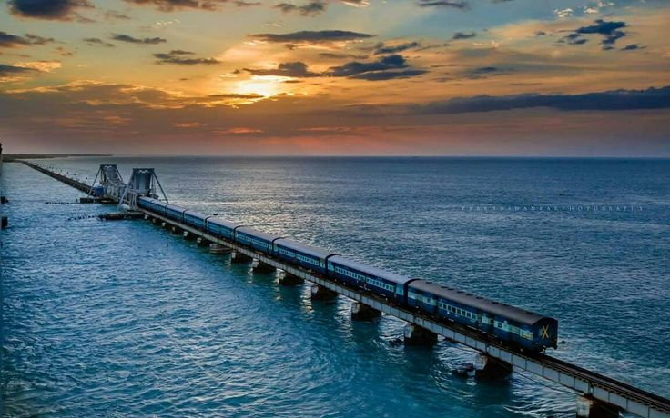
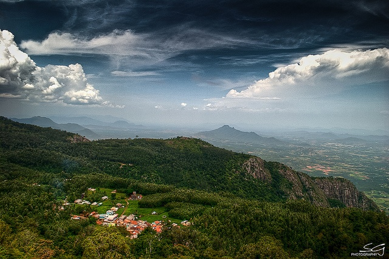
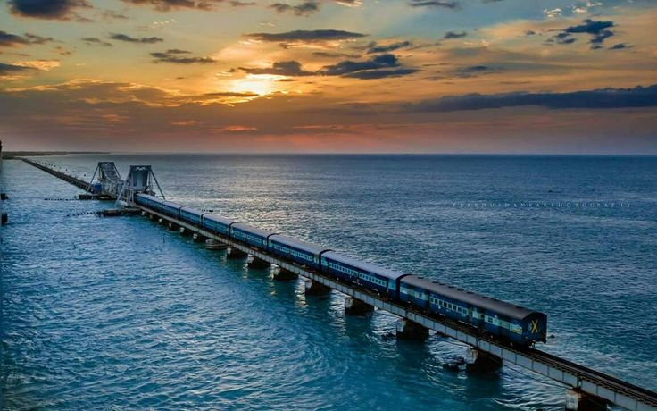
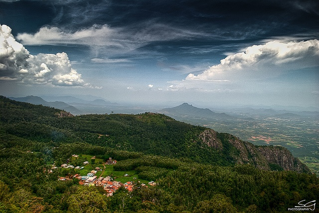
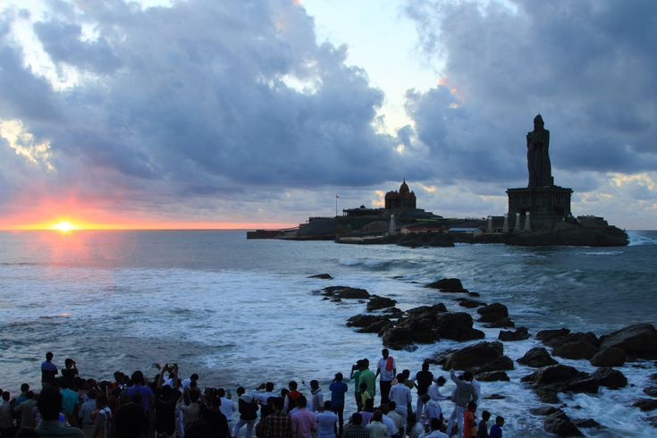
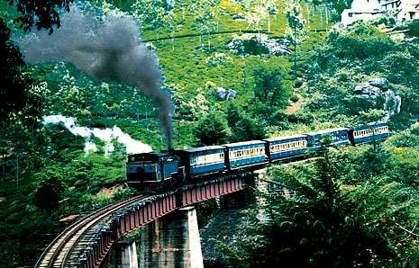
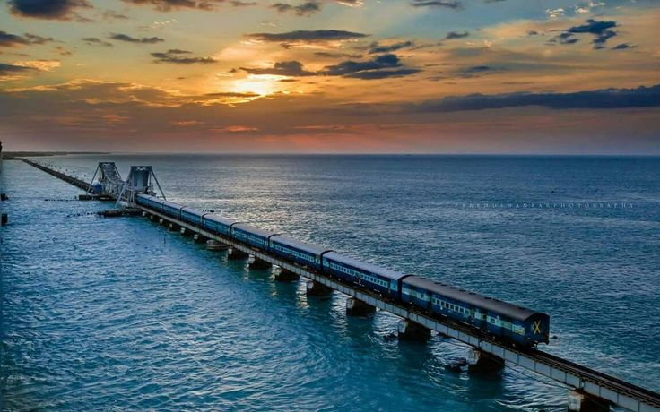
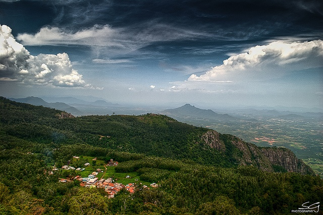
Marina Beach, one of the longest urban beaches in the world, stretches along the eastern coastline of Chennai. The beach is a popular spot for morning walks, recreational activities, and evening gatherings. Its proximity to many significant landmarks, such as Fort St. George, the University of Madras, and the iconic Lighthouse, makes it a cultural hotspot. Street vendors selling traditional South Indian snacks like sundal and murukku add to the beach's lively atmosphere. Marina Beach is also a place for political and social gatherings, and many memorials are located here.
The Meenakshi Amman Temple is one of the most famous temples in South India and a symbol of Madurai's rich cultural and religious history. Built during the reign of the Pandya dynasty, the temple stands as a brilliant example of Dravidian architecture. It houses over 33,000 sculptures and is a hub for the vibrant annual Meenakshi Tirukalyanam festival, which celebrates the marriage of Goddess Meenakshi and Lord Shiva. The temple’s 14 gopurams (towers) are adorned with brightly painted sculptures of deities, mythical creatures, and demons, making it one of the most colorful temples in the world.
Brihadeeswarar Temple, often referred to as the "Big Temple," is a majestic symbol of Tamil pride and Chola architectural prowess. Constructed in the 11th century under the reign of Raja Raja Chola I, the temple's colossal structure features a 66-meter tall Vimana (temple tower), one of the tallest in the world. The temple is also famous for the massive monolithic Nandi (bull) statue that stands at the entrance. It remains an important spiritual center as well as an architectural marvel, drawing tourists and historians alike.
Mahabalipuram, also known as Mamallapuram, is a coastal town famous for its ancient rock-cut temples and sculptures that date back to the 7th and 8th centuries. A UNESCO World Heritage Site, Mahabalipuram was a bustling port city during the Pallava dynasty. The most famous landmark is the Shore Temple, which overlooks the Bay of Bengal, making it a scenic and historically significant spot. The town is also known for its stone-carving traditions that continue to this day.
Kodaikanal, often called the "Princess of Hill Stations," is famous for its natural beauty, serene atmosphere, and pleasant climate. Located in the Palani Hills of the Western Ghats, the town is surrounded by forests, waterfalls, and lakes. Kodaikanal Lake, the centerpiece of the town, offers boating and cycling opportunities, while Bryant Park is a great place for a picnic. Kodaikanal is also home to the famous Kurinji flower, which blooms once every twelve years. Its cool climate and serene environment make it a popular retreat for both locals and tourists.
Ooty, also known as Udhagamandalam, is the most famous hill station in Tamil Nadu and is affectionately called the "Queen of Hill Stations." Set amidst the Nilgiri Hills, Ooty offers stunning landscapes, cool climate, and sprawling tea gardens. A ride on the Nilgiri Mountain Railway (a UNESCO World Heritage site) offers breathtaking views of the mountains. Botanical Gardens and Rose Gardens are top attractions, and Ooty Lake is perfect for boating. The rich biodiversity of the region, along with its colonial architecture, gives Ooty its unique charm.
Rameswaram is one of the holiest places in India for Hindus and a significant pilgrimage destination. Located on Pamban Island, the town is home to the Ramanathaswamy Temple, known for its long corridors and towering gopurams. Pilgrims also visit the nearby town of Dhanushkodi, known for its ruined church and serene beach. The Pamban Bridge, connecting the island to mainland India, offers stunning views of the Indian Ocean. Rameswaram is also linked to the legendary tales of the Ramayana.
Kanyakumari, situated at the southern tip of India, is unique as it is the point where the Arabian Sea, Bay of Bengal, and the Indian Ocean meet. Known for its captivating sunrise and sunset views, Kanyakumari is rich in history and spirituality. The Vivekananda Rock Memorial, where Swami Vivekananda meditated, and the giant Thiruvalluvar Statue are popular landmarks. Visitors can also explore temples, churches, and colonial architecture. The coastal beauty, combined with its cultural and historical significance, makes Kanyakumari a must-visit.
Yercaud is a lesser-known hill station nestled in the Eastern Ghats, ideal for those seeking tranquility amidst nature. Known for its coffee plantations, orange groves, and serene landscapes, Yercaud offers a peaceful environment. The Yercaud Lake is a popular spot for boating, and the Shevaroy Hills provide panoramic views of the surrounding countryside. The town’s cool climate, coupled with its natural beauty, makes it a great retreat from the heat of the plains.
Pondicherry, also known as Puducherry, is a Union Territory located along the southeastern coast of India. This former French colony is famous for its distinct blend of French and Indian cultures. The picturesque town is known for its charming colonial architecture, serene beaches, cobblestone streets, and French-inspired cafes. The French Quarter, with its mustard-colored villas, stylish boutiques, and art galleries, creates a unique European vibe. Spiritual seekers often visit Auroville, a township dedicated to human unity, and Sri Aurobindo Ashram, a prominent spiritual center.